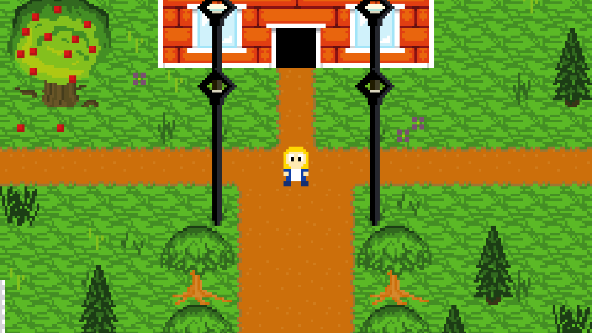

BooBoo 'town' Example

In this example, you can walk around a small town, and pick up apples and carrots.
This example includes a tile sheet, AshEdit map, sprite, MML music track and apple/carrot images.
The first source file is commonly used in the BooBoo examples to merge keyboard/gamepad input and handle input a little easier. It's called poll_joystick.inc:
poll_joystick.inc
var joy_x1 joy_y1 joy_x2 joy_y2 joy_x3 joy_y3 joy_l joy_r joy_u joy_d joy_a joy_b joy_x joy_y joy_lb joy_rb joy_ls joy_rs joy_back joy_start = joy_x1 (joy_get_axis 0 JOY_LEFTX) = joy_y1 (joy_get_axis 0 JOY_LEFTY) = joy_x2 (joy_get_axis 0 JOY_RIGHTX) = joy_y2 (joy_get_axis 0 JOY_RIGHTY) = joy_x3 (joy_get_axis 0 JOY_TRIGGERLEFT) = joy_y3 (joy_get_axis 0 JOY_TRIGGERRIGHT) = joy_a (joy_get_button 0 JOY_A) = joy_b (joy_get_button 0 JOY_B) = joy_x (joy_get_button 0 JOY_X) = joy_y (joy_get_button 0 JOY_Y) = joy_u (joy_get_button 0 JOY_U) = joy_d (joy_get_button 0 JOY_D) = joy_l (joy_get_button 0 JOY_L) = joy_r (joy_get_button 0 JOY_R) = joy_ls (joy_get_button 0 JOY_LS) = joy_rs (joy_get_button 0 JOY_RS) = joy_lb (joy_get_button 0 JOY_LB) = joy_rb (joy_get_button 0 JOY_RB) = joy_back (joy_get_button 0 JOY_BACK) = joy_start (joy_get_button 0 JOY_START) ; This provides some keyboard support mapped to joystick var _key_l _key_r _key_u _key_d _key_a _key_b _key_back = _key_l (key_get KEY_LEFT) = _key_r (key_get KEY_RIGHT) = _key_u (key_get KEY_UP) = _key_d (key_get KEY_DOWN) = _key_a (key_get KEY_Z) = _key_b (key_get KEY_X) = _key_back (key_get KEY_ESCAPE) = joy_l (|| (== _key_l 1) (== joy_l 1)) = joy_r (|| (== _key_r 1) (== joy_r 1)) = joy_u (|| (== _key_u 1) (== joy_u 1)) = joy_d (|| (== _key_d 1) (== joy_d 1)) = joy_a (|| (== _key_a 1) (== joy_a 1)) = joy_b (|| (== _key_b 1) (== joy_b 1)) = joy_back (|| (== _key_back 1) (== joy_back 1))
The main code presents a bunch of BooBoo syntax you may see:
main.boo
var music
= music (mml_load "music/town.mml")
= VOID (mml_play music 0.5 1)
var pickup
= pickup (mml_load "sfx/pickup.mml")
var W H
= W 240
= H 135
resize W H
var sprite
= sprite (sprite_load "pleasant")
var apple_img carrot_img
= apple_img (image_load "misc/apple.png")
= carrot_img (image_load "misc/carrot.png")
var tilemap
= tilemap (tilemap_load "map.wm3")
var anim
var frame
vector_add frame 8
vector_add frame 7
vector_add anim frame
vector_clear frame
vector_add frame 12
vector_add frame 7
vector_add anim frame
tilemap_set_animated_tiles tilemap 500 4 3 anim
var collectibles
var groups
= groups (tilemap_get_groups tilemap)
var num_groups
= num_groups (vector_size groups)
var i
for i 0 (< i num_groups) 1 next_group
var group
= group [groups i]
var c
if (& [group 0] 1) apple carrot
vector_add c apple_img
:apple
vector_add c carrot_img
:carrot
vector_add c [group 1]
vector_add c [group 2]
vector_add collectibles c
:next_group
var TILE_SIZE px py dir_x dir_y moving move_count MOVE_TIME
= TILE_SIZE 16
= px 19
= py 11
= moving 0
= MOVE_TIME 20
= dir_x 0
= dir_y 1
function suffix_from_dirs dx dy
{
if (&& (== dx 0) (== dy 1)) south (&& (== dx 0) (== dy -1)) north (&& (== dx 1) (== dy 0)) east west
return "_s"
:south
return "_n"
:north
return "_e"
:east
return "_w"
:west
}
function draw
{
var ox oy sx sy
= ox (- (+ (/ TILE_SIZE 2) (* px TILE_SIZE)) (/ W 2))
= oy (- (+ (/ TILE_SIZE 2) (* py TILE_SIZE)) (/ H 2))
= sx (* px TILE_SIZE)
= sy (* py TILE_SIZE)
if (== moving 1) draw_moving
var dx dy
= dx dir_x
= dy dir_y
var inc
= inc TILE_SIZE
var p
= p (/ move_count MOVE_TIME)
= inc (* inc p)
= dx (* dx inc)
= dy (* dy inc)
= ox (+ ox dx)
= oy (+ oy dy)
= sx (+ sx dx)
= sy (+ sy dy)
:draw_moving
var map_w map_h
explode (tilemap_size tilemap) map_w map_h
= map_w (* map_w TILE_SIZE)
= map_h (* map_h TILE_SIZE)
if (< ox 0) too_left (> ox (- map_w W)) too_right
= ox 0
:too_left
= ox (- map_w W)
:too_right
if (< oy 0) too_up (> oy (- map_h H)) too_down
= oy 0
:too_up
= oy (- map_h H)
:too_down
var layers
= layers (tilemap_num_layers tilemap)
tilemap_draw tilemap 0 1 (* ox -1) (* oy -1)
var i
var sz
= sz (vector_size collectibles)
for i 0 (< i sz) 1 next_collectible
var c
= c [collectibles i]
var dx dy
= dx (- (* [c 1] TILE_SIZE) ox)
= dy (- (* [c 2] TILE_SIZE) oy)
image_draw [c 0] 255 255 255 255 dx dy 0 0
:next_collectible
sprite_draw sprite 255 255 255 255 (- sx ox) (- sy oy) 0 0
tilemap_draw tilemap 2 (- layers 1) (* ox -1) (* oy -1)
}
function run
{
include "poll_joystick.inc"
var map_w map_h
explode (tilemap_size tilemap) map_w map_h
if (== moving 1) do_moving not_moving
= move_count (+ move_count 1)
if (>= move_count MOVE_TIME) done_moving
if (== dir_x -1) check_l (== dir_x 1) check_r (== dir_y -1) check_u (== dir_y 1) check_d
if (!= joy_l 1) done_l
= moving 0
:done_l
:check_l
if (!= joy_r 1) done_r
= moving 0
:done_r
:check_r
if (!= joy_u 1) done_u
= moving 0
:done_u
:check_u
if (!= joy_d 1) done_d
= moving 0
:done_d
:check_d
= px (+ px dir_x)
= py (+ py dir_y)
= move_count 0
if (== moving 1) check_solids2
var xx
var yy
= xx px
= yy py
= xx (+ xx dir_x)
= yy (+ yy dir_y)
var s
= s (tilemap_is_solid tilemap xx yy)
if (== s 1) stop
= moving 0
:stop
:check_solids2
if (== moving 0) stand
var suffix
call_result suffix suffix_from_dirs dir_x dir_y
var a
= a "stand"
= a (+ a suffix)
sprite_set_animation sprite a
:stand
:done_moving
:do_moving
if (== joy_l 1) go_left (== joy_r 1) go_right (== joy_u 1) go_up (== joy_d 1) go_down
= moving 1
= move_count 0
= dir_x -1
= dir_y 0
:go_left
= moving 1
= move_count 0
= dir_x 1
= dir_y 0
:go_right
= moving 1
= move_count 0
= dir_x 0
= dir_y -1
:go_up
= moving 1
= move_count 0
= dir_x 0
= dir_y 1
:go_down
if (== moving 1) check_solids
var xx yy
= xx px
= yy py
= xx (+ xx dir_x)
= yy (+ yy dir_y)
if (== 0 (&& (>= xx 0) (>= yy 0) (< xx map_w) (< yy map_h))) cant_move continue_check
= moving 0
:cant_move
var solid
= solid (tilemap_is_solid tilemap xx yy)
if (== 1 solid) cant_move2
= moving 0
:cant_move2
:continue_check
:check_solids
var suffix
call_result suffix suffix_from_dirs dir_x dir_y
var a
if (== moving 1) walk stand2
= a "walk"
= a (+ a suffix)
sprite_set_animation sprite a
:walk
= a "stand"
= a (+ a suffix)
sprite_set_animation sprite a
:stand2
:not_moving
? joy_a 1
jne no_pickup
var dx dy
= dx (+ px dir_x)
= dy (+ py dir_y)
var i sz
= sz (vector_size collectibles)
for i 0 (< i sz) 1 next_pickup_check
var c
= c [collectibles i]
var cx cy
= cx [c 1]
= cy [c 2]
if (&& (== cx dx) (== cy dy)) pick_it_up
= VOID (mml_play pickup 1 0)
vector_erase collectibles i
goto no_pickup
:pick_it_up
:next_pickup_check
:no_pickup
}